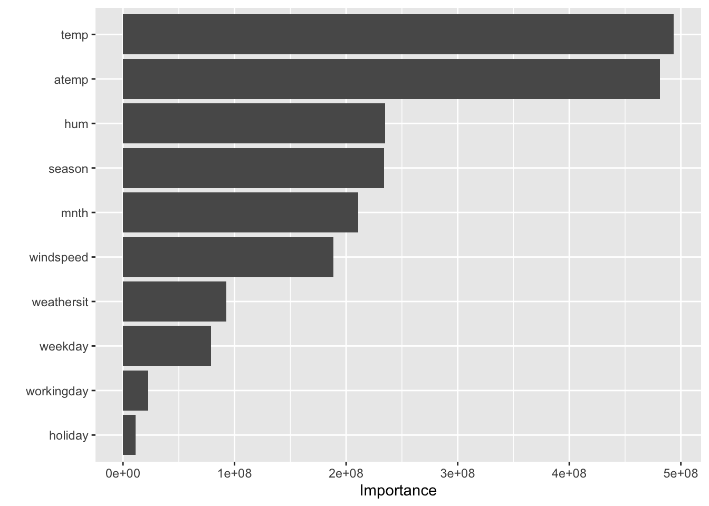

# loading data
bike <- read.csv("day.csv")
# minor data cleaning
bike <- bike %>%
select(!c(instant,dteday, registered, casual,yr))
bike$weekday <- as.character(bike$weekday)
bike$season <- as.character(bike$season)
bike$mnth <- as.character(bike$mnth)
# task: predict 'cnt' (bike count) using necessary featuresAnalyzing the DC BikeShare System
Note
This technical report is accompanied by a plain-language report written to theoretical shareholders.
Introduction
We are investigating the bike sharing data set, which includes data on the Capital Bikeshare System, a bike rental service in Washington D.C. The main variable of interest in this data set is count, which represents the total number of bikes rented in a given day (There is also hourly data available, though daily data is used for the purpose of this project). After setting up feature engineering, we build and analyze several models and utilize cross validation to evaluate and compare the models. Once the optimal model is chosen, it is then used on the test set and further evaluated for its performance.
Data
Our data comes from the UC Davis Machine Learning Repository and has 731 observations (2 years worth of data). Some features included the season, month, and different weather observations. All features used, along with their description and units if applicable are listed below:
| Variable Name | Role | Description | Units |
|---|---|---|---|
| season | Feature | 1:winter, 2:spring, 3:summer, 4:fall | |
| month | Feature | month (1 to 12) | |
| holiday | Feature | weather day is holiday or not (extracted from http://dchr.dc.gov/page/holiday-schedule) | |
| weekday | Feature | day of the week | |
| workingday | Feature | if day is neither weekend nor holiday is 1, otherwise is 0 | |
| weathersit | Feature | - 1: Clear, Few clouds, Partly cloudy, Partly cloudy | |
| temp | Feature | Normalized temperature in Celsius. The values are derived via (t-t_min)/(t_max-t_min), t_min=-8, t_max=+39 (only in hourly scale) | C |
| atemp | Feature | Normalized feeling temperature in Celsius. The values are derived via (t-t_min)/(t_max-t_min), t_min=-16, t_max=+50 (only in hourly scale) | C |
| hum | Feature | Normalized humidity. The values are divided to 100 (max) | |
| windspeed | Feature | Normalized wind speed. The values are divided to 67 (max) | |
| count | Target | count of total rental bikes including both casual and registered |
set.seed(208)
# data exploration
glimpse(bike)Rows: 731
Columns: 11
$ season <chr> "1", "1", "1", "1", "1", "1", "1", "1", "1", "1", "1", "1",…
$ mnth <chr> "1", "1", "1", "1", "1", "1", "1", "1", "1", "1", "1", "1",…
$ holiday <int> 0, 0, 0, 0, 0, 0, 0, 0, 0, 0, 0, 0, 0, 0, 0, 0, 1, 0, 0, 0,…
$ weekday <chr> "6", "0", "1", "2", "3", "4", "5", "6", "0", "1", "2", "3",…
$ workingday <int> 0, 0, 1, 1, 1, 1, 1, 0, 0, 1, 1, 1, 1, 1, 0, 0, 0, 1, 1, 1,…
$ weathersit <int> 2, 2, 1, 1, 1, 1, 2, 2, 1, 1, 2, 1, 1, 1, 2, 1, 2, 2, 2, 2,…
$ temp <dbl> 0.3441670, 0.3634780, 0.1963640, 0.2000000, 0.2269570, 0.20…
$ atemp <dbl> 0.3636250, 0.3537390, 0.1894050, 0.2121220, 0.2292700, 0.23…
$ hum <dbl> 0.805833, 0.696087, 0.437273, 0.590435, 0.436957, 0.518261,…
$ windspeed <dbl> 0.1604460, 0.2485390, 0.2483090, 0.1602960, 0.1869000, 0.08…
$ cnt <int> 985, 801, 1349, 1562, 1600, 1606, 1510, 959, 822, 1321, 126…# numerical features: temp, atemp, hum, windspeed
# step_normalize
# holiday and workingday are both categorical but already dummy encoded (1 indicates is is that type of day, 0 otherwise)
# weekday, month, and season are non-ordinal and categorical
# step_dummy
# weathersit is ordinal -> 1 = clear, 2 = few clouds, 3 = partly cloudy, so it has already been step_integered for ussum(is.na(bike))[1] 0# no NA valuesFeature Engineering
set.seed(208)
# data splitting
data_split <- initial_split(data = bike, prop = 0.8)
bike_train <- training(data_split)
bike_test <- testing(data_split)set.seed(208)
nearZeroVar(bike_train, saveMetrics = TRUE) freqRatio percentUnique zeroVar nzv
season 1.013423 0.6849315 FALSE FALSE
mnth 1.019231 2.0547945 FALSE FALSE
holiday 33.352941 0.3424658 FALSE TRUE
weekday 1.011494 1.1986301 FALSE FALSE
workingday 2.173913 0.3424658 FALSE FALSE
weathersit 1.912821 0.5136986 FALSE FALSE
temp 1.250000 71.4041096 FALSE FALSE
atemp 1.333333 94.5205479 FALSE FALSE
hum 1.333333 84.0753425 FALSE FALSE
windspeed 1.000000 91.0958904 FALSE FALSE
cnt 1.000000 96.4041096 FALSE FALSE# holiday is nzv, which should make sense there aren't a ton of holidays, still seems like it could be an important feature to includeset.seed(208)
# feature engineering (full)
bike_recipe <- recipe(formula = cnt ~., data = bike_train)
bike_blueprint <- bike_recipe %>%
step_normalize(temp, atemp, hum, windspeed) %>%
step_dummy(weekday, mnth, season, one_hot = FALSE)
bike_prepare <- prep(bike_blueprint, data = bike_train)
bike_baked_train <- bake(bike_prepare, new_data = bike_train)
bike_baked_test <- bake(bike_prepare, new_data = bike_test) # check baked dataset
glimpse(bike_baked_train)Rows: 584
Columns: 28
$ holiday <int> 0, 0, 0, 0, 0, 0, 0, 0, 0, 0, 0, 0, 0, 0, 0, 0, 0, 0, 1, 0,…
$ workingday <int> 1, 0, 0, 1, 1, 1, 0, 1, 1, 1, 1, 1, 1, 1, 1, 1, 0, 1, 0, 1,…
$ weathersit <int> 1, 1, 2, 1, 2, 2, 1, 2, 1, 1, 1, 1, 1, 1, 2, 1, 2, 1, 1, 1,…
$ temp <dbl> 0.8492669, 0.6474146, -0.4673502, 1.5052771, -0.2976142, 0.…
$ atemp <dbl> 0.7676468, 0.6896242, -0.3757399, 1.6884675, -0.2665057, 0.…
$ hum <dbl> -1.1173994, -0.3498378, 0.9077861, 0.5771409, 0.9373102, 0.…
$ windspeed <dbl> -0.19277865, 0.45412663, 1.32794434, -0.99358636, 1.8941392…
$ cnt <int> 7736, 6118, 2429, 4332, 2566, 4727, 1787, 1650, 4169, 6207,…
$ weekday_X1 <dbl> 0, 0, 0, 0, 0, 0, 0, 0, 0, 0, 0, 0, 0, 0, 0, 0, 0, 0, 1, 0,…
$ weekday_X2 <dbl> 0, 0, 0, 0, 0, 0, 0, 0, 0, 0, 1, 1, 1, 0, 1, 0, 0, 1, 0, 0,…
$ weekday_X3 <dbl> 0, 0, 0, 1, 1, 0, 0, 1, 1, 0, 0, 0, 0, 0, 0, 0, 0, 0, 0, 0,…
$ weekday_X4 <dbl> 0, 0, 0, 0, 0, 0, 0, 0, 0, 0, 0, 0, 0, 1, 0, 0, 0, 0, 0, 0,…
$ weekday_X5 <dbl> 1, 0, 0, 0, 0, 1, 0, 0, 0, 1, 0, 0, 0, 0, 0, 1, 0, 0, 0, 1,…
$ weekday_X6 <dbl> 0, 0, 1, 0, 0, 0, 0, 0, 0, 0, 0, 0, 0, 0, 0, 0, 0, 0, 0, 0,…
$ mnth_X10 <dbl> 0, 0, 1, 0, 0, 0, 0, 0, 0, 0, 0, 0, 0, 0, 1, 0, 0, 0, 0, 0,…
$ mnth_X11 <dbl> 0, 0, 0, 0, 1, 0, 0, 0, 0, 0, 0, 0, 0, 0, 0, 0, 0, 0, 0, 1,…
$ mnth_X12 <dbl> 0, 0, 0, 0, 0, 0, 1, 0, 0, 0, 0, 0, 0, 0, 0, 0, 0, 0, 0, 0,…
$ mnth_X2 <dbl> 0, 0, 0, 0, 0, 0, 0, 0, 1, 0, 0, 0, 0, 0, 0, 0, 1, 0, 1, 0,…
$ mnth_X3 <dbl> 0, 0, 0, 0, 0, 0, 0, 0, 0, 0, 0, 0, 0, 1, 0, 0, 0, 0, 0, 0,…
$ mnth_X4 <dbl> 0, 0, 0, 0, 0, 0, 0, 0, 0, 0, 0, 0, 0, 0, 0, 0, 0, 0, 0, 0,…
$ mnth_X5 <dbl> 0, 1, 0, 0, 0, 0, 0, 0, 0, 0, 1, 0, 0, 0, 0, 0, 0, 0, 0, 0,…
$ mnth_X6 <dbl> 1, 0, 0, 0, 0, 0, 0, 0, 0, 0, 0, 0, 0, 0, 0, 0, 0, 0, 0, 0,…
$ mnth_X7 <dbl> 0, 0, 0, 1, 0, 0, 0, 0, 0, 1, 0, 0, 1, 0, 0, 1, 0, 0, 0, 0,…
$ mnth_X8 <dbl> 0, 0, 0, 0, 0, 0, 0, 0, 0, 0, 0, 1, 0, 0, 0, 0, 0, 0, 0, 0,…
$ mnth_X9 <dbl> 0, 0, 0, 0, 0, 1, 0, 0, 0, 0, 0, 0, 0, 0, 0, 0, 0, 1, 0, 0,…
$ season_X2 <dbl> 1, 1, 0, 0, 0, 0, 0, 0, 0, 0, 1, 0, 0, 1, 0, 0, 0, 0, 0, 0,…
$ season_X3 <dbl> 0, 0, 0, 1, 0, 1, 0, 0, 0, 1, 0, 1, 1, 0, 0, 1, 0, 1, 0, 0,…
$ season_X4 <dbl> 0, 0, 1, 0, 1, 0, 0, 0, 0, 0, 0, 0, 0, 0, 1, 0, 0, 0, 0, 1,…summary(bike_baked_train) holiday workingday weathersit temp
Min. :0.00000 Min. :0.0000 Min. :1.000 Min. :-2.39889
1st Qu.:0.00000 1st Qu.:0.0000 1st Qu.:1.000 1st Qu.:-0.87793
Median :0.00000 Median :1.0000 Median :1.000 Median : 0.02351
Mean :0.02911 Mean :0.6849 Mean :1.389 Mean : 0.00000
3rd Qu.:0.00000 3rd Qu.:1.0000 3rd Qu.:2.000 3rd Qu.: 0.87220
Max. :1.00000 Max. :1.0000 Max. :3.000 Max. : 2.01908
atemp hum windspeed cnt
Min. :-2.43875 Min. :-4.43269 Min. :-2.1828 Min. : 22
1st Qu.:-0.85760 1st Qu.:-0.77347 1st Qu.:-0.7266 1st Qu.:3212
Median : 0.08472 Median :-0.01477 Median :-0.1363 Median :4540
Mean : 0.00000 Mean : 0.00000 Mean : 0.0000 Mean :4515
3rd Qu.: 0.83009 3rd Qu.: 0.73435 3rd Qu.: 0.5697 3rd Qu.:5978
Max. : 2.26972 Max. : 2.45767 Max. : 4.1267 Max. :8714
weekday_X1 weekday_X2 weekday_X3 weekday_X4
Min. :0.0000 Min. :0.0000 Min. :0.0000 Min. :0.0000
1st Qu.:0.0000 1st Qu.:0.0000 1st Qu.:0.0000 1st Qu.:0.0000
Median :0.0000 Median :0.0000 Median :0.0000 Median :0.0000
Mean :0.1507 Mean :0.1421 Mean :0.1404 Mean :0.1353
3rd Qu.:0.0000 3rd Qu.:0.0000 3rd Qu.:0.0000 3rd Qu.:0.0000
Max. :1.0000 Max. :1.0000 Max. :1.0000 Max. :1.0000
weekday_X5 weekday_X6 mnth_X10 mnth_X11
Min. :0.0000 Min. :0.000 Min. :0.00000 Min. :0.00000
1st Qu.:0.0000 1st Qu.:0.000 1st Qu.:0.00000 1st Qu.:0.00000
Median :0.0000 Median :0.000 Median :0.00000 Median :0.00000
Mean :0.1455 Mean :0.137 Mean :0.08733 Mean :0.09075
3rd Qu.:0.0000 3rd Qu.:0.000 3rd Qu.:0.00000 3rd Qu.:0.00000
Max. :1.0000 Max. :1.000 Max. :1.00000 Max. :1.00000
mnth_X12 mnth_X2 mnth_X3 mnth_X4
Min. :0.0000 Min. :0.00000 Min. :0.00000 Min. :0.00000
1st Qu.:0.0000 1st Qu.:0.00000 1st Qu.:0.00000 1st Qu.:0.00000
Median :0.0000 Median :0.00000 Median :0.00000 Median :0.00000
Mean :0.0839 Mean :0.08048 Mean :0.07534 Mean :0.08904
3rd Qu.:0.0000 3rd Qu.:0.00000 3rd Qu.:0.00000 3rd Qu.:0.00000
Max. :1.0000 Max. :1.00000 Max. :1.00000 Max. :1.00000
mnth_X5 mnth_X6 mnth_X7 mnth_X8
Min. :0.00000 Min. :0.0000 Min. :0.00000 Min. :0.00000
1st Qu.:0.00000 1st Qu.:0.0000 1st Qu.:0.00000 1st Qu.:0.00000
Median :0.00000 Median :0.0000 Median :0.00000 Median :0.00000
Mean :0.08733 Mean :0.0839 Mean :0.08219 Mean :0.07705
3rd Qu.:0.00000 3rd Qu.:0.0000 3rd Qu.:0.00000 3rd Qu.:0.00000
Max. :1.00000 Max. :1.0000 Max. :1.00000 Max. :1.00000
mnth_X9 season_X2 season_X3 season_X4
Min. :0.00000 Min. :0.0000 Min. :0.00 Min. :0.0000
1st Qu.:0.00000 1st Qu.:0.0000 1st Qu.:0.00 1st Qu.:0.0000
Median :0.00000 Median :0.0000 Median :0.00 Median :0.0000
Mean :0.08562 Mean :0.2586 Mean :0.25 Mean :0.2551
3rd Qu.:0.00000 3rd Qu.:1.0000 3rd Qu.:0.25 3rd Qu.:1.0000
Max. :1.00000 Max. :1.0000 Max. :1.00 Max. :1.0000 Minimal Feature Engineering
set.seed(208)
# feature engineering (minimal)
bike_recipe <- recipe(formula = cnt ~., data = bike_train)
bike_blueprint_min <- bike_recipe
bike_prepare_min <- prep(bike_blueprint_min, data = bike_train)
bike_baked_train_min <- bake(bike_prepare_min, new_data = bike_train)
bike_baked_test_min <- bake(bike_prepare_min, new_data = bike_test) Analysis/Methodology
We did some initial data exploration, looking in to the types of variables present, ranges of values for variables, any missing entries, etc. There were some variables we decided to remove from our dataset prior to model building for a number of reasons. For example, we removed the yr and date variables as these do not provide any helpful information for future predictions, and we would not want them influencing our model. We found no missing entries in the variables we will use. The only feature engineering we found it necessary to implement was normalizing numeric predictors and dummy encoding categorical predictors. We also created a minimal FE blueprint with no feature engineering to test applicable models on this as well. We considered an 80-20 split for splitting our data and creating training and test sets.
This is a supervised, regression problem so a logistic regression would not make sense to use in this case. Instead, we will build and compare the following models:
- Linear Regression
- KNN
- Single Tree
- Random Forest
- Boosted Trees
All of these models besides KNN will be built on both the full feature engineered training data, as well as the minimal FE data. Minimal feature engineering only includes imputing missing values, and since we have none of those, the models will simply be trained and tested on the original training and test sets. All models will be trained and compared using the CV process to tune hyperparameters and obtain test predictions for accuracy.
# CV specifications
set.seed(208)
cv_specs_bike <- trainControl(method = "repeatedcv", # CV method
number = 5, # number of folds
repeats = 1) # number of repeats# for KNN
k_grid_bike <- expand.grid(k = seq(1, 51, by = 10)) # for random forests
param_grid_rf_bike <- expand.grid(mtry = seq(1, 10, 1),
splitrule = "variance",
min.node.size = 2) set.seed(208)
# linear (full FE)
lm_cv_bike <- train(bike_blueprint,
data = bike_train,
method = "lm",
trControl = cv_specs_bike,
metric = "RMSE")set.seed(208)
# linear (min FE)
lm_cv_bike_min <- train(bike_blueprint_min,
data = bike_train,
method = "lm",
trControl = cv_specs_bike,
metric = "RMSE")set.seed(208)
# KNN
knn_cv_bike <- train(bike_blueprint,
data = bike_train,
method = "knn",
trControl = cv_specs_bike,
tuneGrid = k_grid_bike,
metric = "RMSE")set.seed(208)
# tree (full FE)
tree_cv_bike <- train(bike_blueprint,
data = bike_train,
method = "rpart",
trControl = cv_specs_bike,
tuneLength = 20,
metric = "RMSE")set.seed(208)
# tree (min FE)
tree_cv_bike_min <- train(bike_blueprint_min,
data = bike_train,
method = "rpart",
trControl = cv_specs_bike,
tuneLength = 20,
metric = "RMSE")set.seed(208)
# random forest (full FE)
rf_cv_bike <- train(bike_blueprint,
data = bike_train,
method = "ranger",
trControl = cv_specs_bike,
tuneGrid = param_grid_rf_bike,
metric = "RMSE")set.seed(208)
# random forest (min FE)
rf_cv_bike_min <- train(bike_blueprint_min,
data = bike_train,
method = "ranger",
trControl = cv_specs_bike,
tuneGrid = param_grid_rf_bike,
metric = "RMSE")set.seed(208)
# gradient boosting (full FE)
out_bike <- capture.output(
gbm_cv_bike <- train(bike_blueprint,
data = bike_train,
method = "gbm",
trControl = cv_specs_bike,
tuneLength = 5,
metric = "RMSE"))set.seed(208)
# gradient boosting (min FE)
out_bike_min <- capture.output(
gbm_cv_bike_min <- train(bike_blueprint_min,
data = bike_train,
method = "gbm",
trControl = cv_specs_bike,
tuneLength = 5,
metric = "RMSE"))CV Results
RMSE
set.seed(208)
# optimal RMSE
min(lm_cv_bike$results$RMSE)[1] 1353.256min(lm_cv_bike_min$results$RMSE)[1] 1353.256min(knn_cv_bike$results$RMSE)[1] 1259.461min(tree_cv_bike$results$RMSE)[1] 1393.776min(tree_cv_bike_min$results$RMSE)[1] 1399.762min(rf_cv_bike$results$RMSE)[1] 1246.361min(rf_cv_bike_min$results$RMSE)[1] 1241.927min(gbm_cv_bike$results$RMSE)[1] 1255.633min(gbm_cv_bike_min$results$RMSE)[1] 1346.863RMSE SD
set.seed(208)
# RMSESD
lm_cv_bike$results$RMSESD[which.min(lm_cv_bike$results$RMSE)][1] 66.96529lm_cv_bike_min$results$RMSESD[which.min(lm_cv_bike_min$results$RMSE)][1] 66.96529knn_cv_bike$results$RMSESD[which.min(knn_cv_bike$results$RMSE)][1] 66.39121tree_cv_bike$results$RMSESD[which.min(tree_cv_bike$results$RMSE)][1] 108.2552tree_cv_bike_min$results$RMSESD[which.min(tree_cv_bike_min$results$RMSE)][1] 108.4535rf_cv_bike$results$RMSESD[which.min(rf_cv_bike$results$RMSE)][1] 69.62765rf_cv_bike_min$results$RMSESD[which.min(rf_cv_bike_min$results$RMSE)][1] 63.96872gbm_cv_bike$results$RMSESD[which.min(gbm_cv_bike$results$RMSE)][1] 67.95094gbm_cv_bike_min$results$RMSESD[which.min(gbm_cv_bike_min$results$RMSE)][1] 73.97493Optimal Parameters
set.seed(208)
# best tune
knn_cv_bike$bestTune k
3 21tree_cv_bike$bestTune cp
12 0.009757784tree_cv_bike_min$bestTune cp
14 0.01449829rf_cv_bike$bestTune mtry splitrule min.node.size
8 8 variance 2rf_cv_bike_min$bestTune mtry splitrule min.node.size
2 2 variance 2gbm_cv_bike$bestTune n.trees interaction.depth shrinkage n.minobsinnode
7 100 2 0.1 10gbm_cv_bike_min$bestTune n.trees interaction.depth shrinkage n.minobsinnode
6 50 2 0.1 10Results
The following table gives the concise results of our CV:
| Technique | RMSE | RMSE SD | Optimal Parameters |
|---|---|---|---|
| LM (Full FE) | 1353.256 | 66.96529 | - |
| LM (Min FE) | 1353.256 | 66.96529 | - |
| KNN (Full FE) | 1259.461 | 66.39121 | k = 21 |
| Tree (Full FE) | 1393.776 | 108.2552 | cp = 0.00976 |
| Tree (Min FE) | 1399.762 | 108.4535 | cp = 0.0145 |
| Random Forest (Full FE) | 1246.416 | 73.35131 | mtry = 6 |
| Random Forest (Min FE) | 1239.478 | 62.84000 | mtry = 3 |
| Gradient Boosting (Full FE) | 1255.566 | 70.53906 | 100 - 2 - 0.1 - 10 |
| Gradient Boosting (Min FE) | 1348.092 | 74.03074 | 250 - 1 - 0.1 - 10 |
The Random Forest with minimal FE has the lowest training loss at 1239.478, along with the lowest RMSE SD at 62.84. Not only does it seem to provide a good fit for the data, but it does not come at the cost of increased variability. For these reasons, we chose this model as the final model to use on the test set and for future data.
Final Model
set.seed(208)
# Random Forest (Min FE) is our optimal model in training. We train it here and report test RMSE.
final_model_bike <- ranger(formula = cnt ~ .,
data = bike_baked_train_min,
num.trees = 500,
mtry = rf_cv_bike_min$bestTune$mtry,
splitrule = "variance",
min.node.size = 2,
importance = "impurity")
final_model_preds_bike <- predict(object = final_model_bike, data = bike_baked_test_min, type = "response")
sqrt(mean((final_model_preds_bike$predictions - bike_baked_test_min$cnt)^2))[1] 1168.83# if implemented on a new dataset, we are likely to see an error around 1159.892# check VIPs
set.seed(208)
vip(final_model_bike, num_features = 10)
# The top 3 VIP's are temp, atemp, and humidity. These seem to make sense logically, and we can maybe assume correlation ourselves. For example, warmer weather most likely correlates with more bikes rented. However, our model cannot tell us the nature of the specific relationship between these variables and our response of count. Conclusion
After performing cross validation to tune hyperparameters and compare training performance across all tested models, we found the optimal model to be the random forested implemented with minimal FE, and mtry=3. On the training set, this model yielded an RMSE of 1240 and RMSESD of 63. When training the final model, and using it to predict on our test set, we found an RMSE of around 1160.
When checking our VIP’s, we see the variables that influence our predictions the most are temperature, average temperature, and humidity. These may be expected. However, our model cannot give us any additional information about specifically how these variables influence prediction.
The random forest with minimal FE seems to be the optimal model on all accounts. Any others that are close to its performance would not add any additional interpretability, usefulness, or reduction in computation power. If we were looking for more interpretability or less resources used, we could perhaps train the linear model with no feature engineering. While this did perform outright worse than the random forest, its interpretability and minmimal computation power needed could make it useful in application.